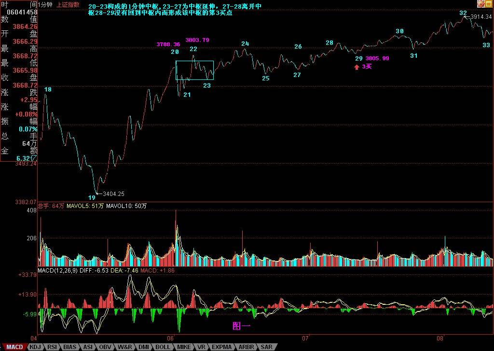
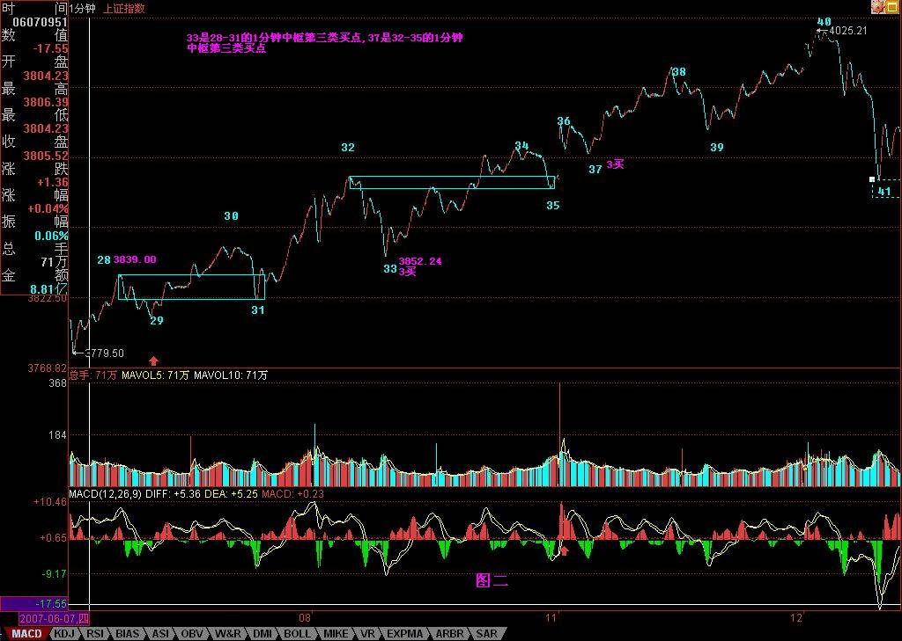
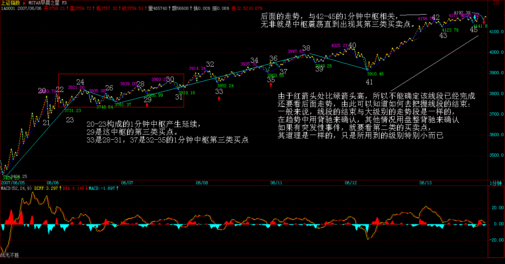
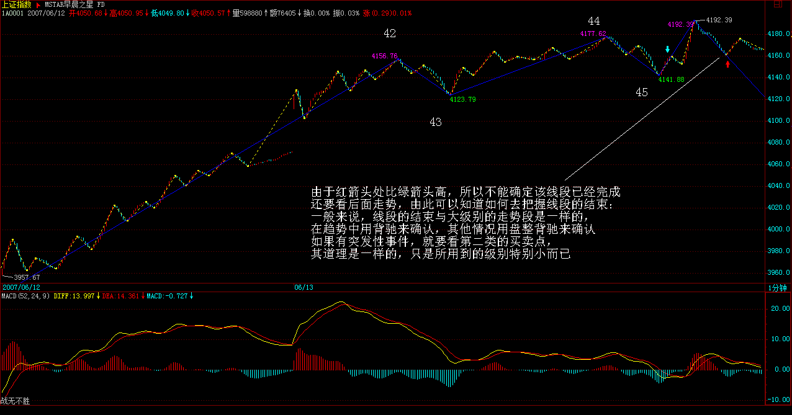
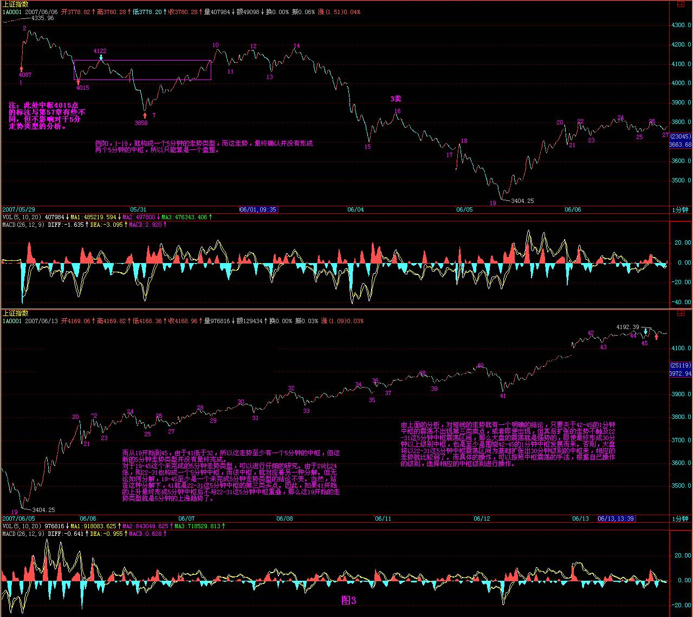
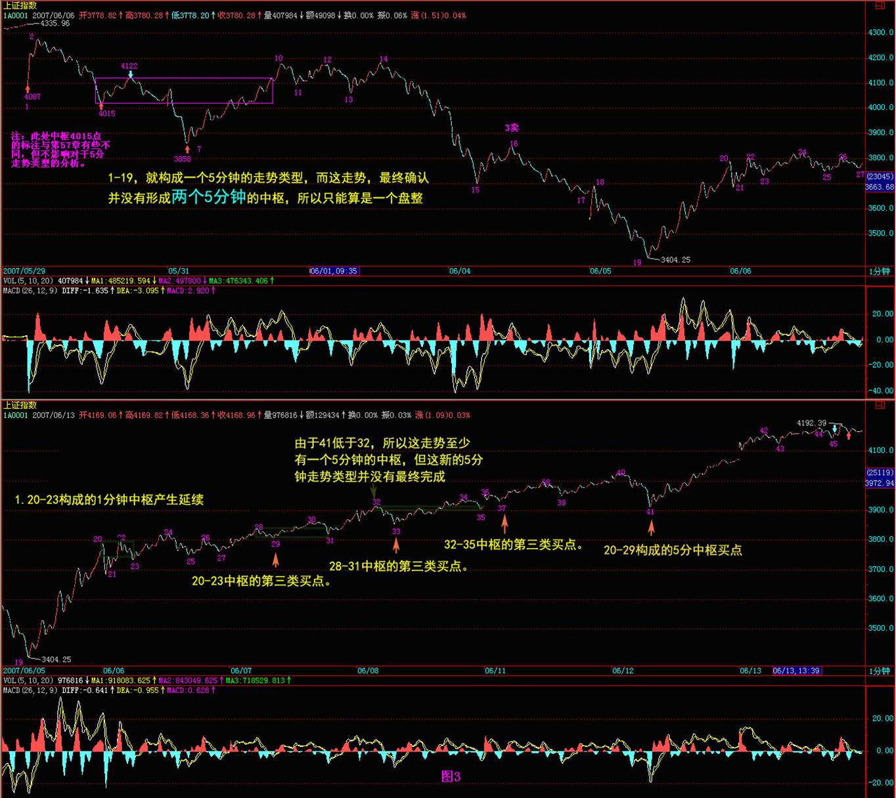
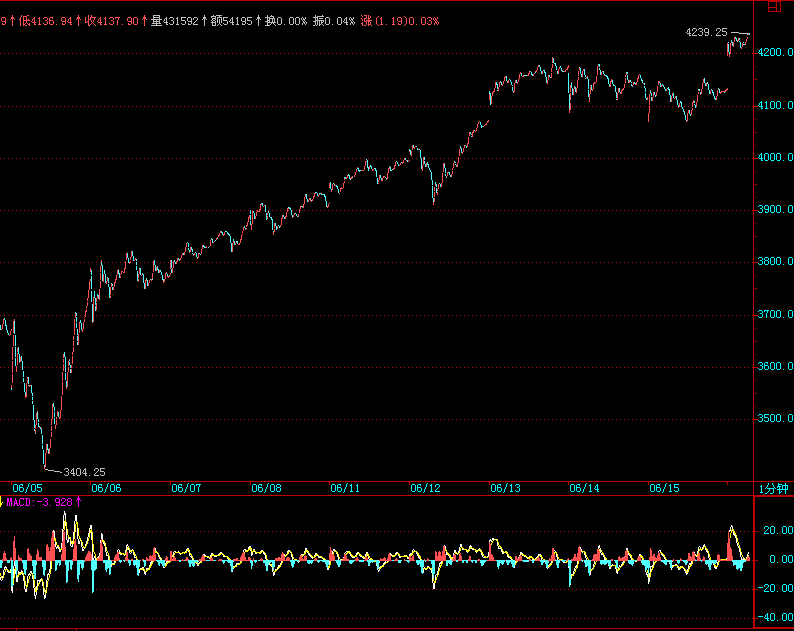
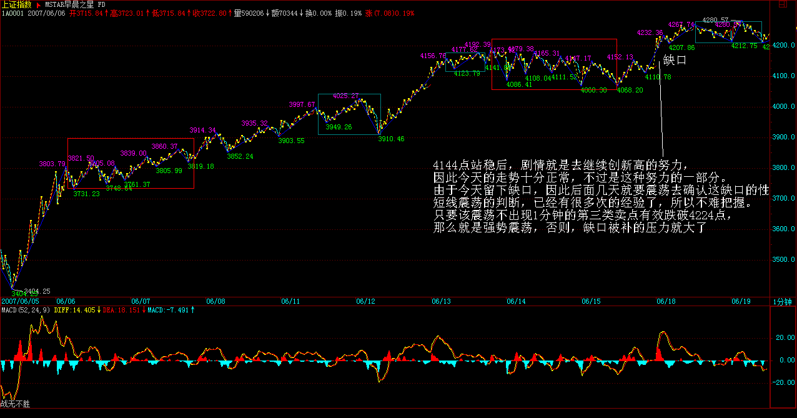

|
 |
教你炒股票59：图解分析示范四
(2007-06-14 08:23:43)
出差，必须用三张图才能把落下的走势补上。对于初学分析的人，最难搞的就是分清楚线段，所以，在每张图上，都继续用数字标记每一段线段，从中不难学会究竟线段是如何分的。
有人可能要问，为什么有些线段延续上百点甚至更多，而有些很短。这没什么奇怪的，是否线段，关键看走出来的形态，如果任何低点比前一个高点都高，那么即使这情况无限延续下去，也依然只是一线段，这和幅度没关系。
还有，前后两线段间，不可能是同向的，同是向上或向下不可能构成两个前后相邻的线段。而且，由于线段都至少呈现上下上或下上下，所以线段不存在一条直线走平的可能，由此也知道，为什么一字涨停，无论如何延续，还是低于线段的级别，是最小级别的。
下面，先把三张图列出来，三者之间是连续的，根据上面的标记可以明白。由于K线太多，不能放到一张图上，否则看不清楚。


图一中，20-23构成的1分钟中枢产生延续，29是这中枢的第三类买点。图二中，33是28-31，37是32-35的1分钟中枢第三类买点。
图三中，由于红箭头处比绿箭头高，所以不能确定该线段已经完成，还要看后面走势，由此可以知道如何去把握线段的结束：一般来说，线段的结束与大级别的走势段是一样的，在趋势中用背驰来确认，其他情况用盘整背驰来确认，如果有突发性事件，就要看第二类的买卖点，其道理是一样的，只是所用到的级别特别小而已。而对于图三，后面的走势，与42-45的1分钟中枢相关，无非就是中枢震荡直到出现其第三类买卖点。
 
注意，在前面一课的
有人可能又要问，怎么总是说1分钟的图？其实，看什么图并不重要，从1分钟图看起，只不过意味着这分析的基础有一个1分钟图的精度前提，在这个前提下，当然要看1分钟的图，而这不影响对大级别的分析。例如，1-19，就构成一个5分钟的走势类型，而这走势，最终确认并没有形成两个5分钟的中枢，所以只能算是一个盘整。而从19开始到45，由于41低于32，所以这走势至少有一个5分钟的中枢，但这新的5分钟走势类型并没有最终完成。
对于19-45这个未完成的5分钟走势类型，可以进行仔细的研究。由于29比24低，则22-31也构成一个5分钟中枢，而该中枢，就对应着另一种分解。但无论如何分解，19-45至少是一个未完成5分钟走势类型的结论不变。当然，站在这种分解下，41就是22-31这5分钟中枢的第三类买点。因此，如果41开始的上升最终形成5分钟中枢后不与22-31这5分钟中枢重叠，那么这19开始的走势类型就是5分钟的上涨趋势了。


由上面的分析，对短线的走势就有一个明确的结论，只要关于42-45的1分钟中枢的震荡不出现第三类卖点，或者即使出现，但其后扩张的走势不触及22-31这5分钟中枢震荡区间，那么大盘的震荡就是强势的，即使最终形成30分钟以上级别中枢，也是至少是围绕42-45的1分钟中枢发展而来。否则，大盘将以22-31这5分钟中枢震荡区间为基础扩张出30分钟级别的中枢来，相应的走势就比较弱了。而具体的操作，可以按照中枢震荡的手法，根据自己操作的级别，选择相应的中枢级别进行操作。
缠中说禅：
2007-06-14
15:33:09 [举报]
今天的走势没什么可讲的，昨天都已经描述得很清楚了。技术、心理、政策等压力，都需要在这里震荡消化。由于今天没完全补上缺口，因此该位置依然是短线的关键，当然，上面说的42-45的1分钟中枢，已经延伸9段，成为一个5分钟中枢了，后面具体的分析，在上面的文章里已经写了，就不再多说。深圳受到13700点的吸引，短线，能否站稳该线对大盘走向有极大的引导作用。
注意，在中枢震荡中，安全的作法应该是先卖后买、形成节奏。其实这问题很简单，从低位上来的筹码，当发现单边走势结束，进入较大级别震荡时候，其标志就是出现顶背驰或盘整背驰，这就要求减磅，然后等震荡下来，出现底背驰或盘整背驰再回补，这样差价才出来，成本才下降。如果是先买后卖，那唯一可能就是在单边的时候，你的仓位不高，所以才会不卖股票也有资金，这其实是节奏先错了的表现。
当然，这些都需要通过练习才能熟练。而且必须注意，一旦震荡的力度大于前面有可能形成第三类卖点时，就一定要停止回补，等待第三类卖点引发的下跌出现买点时再介入，很多人经常出问题，就是心里先假设一个可能的跌幅，觉得肯定跌不深，这都是大毛病。一定要养成只看图形操作的习惯。
还是那句话，无论是政策、心理、消息等，都是市场的分力，而走势是合力的结果，这才是问题的关键之处。
对不起，今天不能回答各位的问题了，下午有一拨人，晚上有两拨都需要腐败活动的，本ID必须去补课，先下，明早见。
缠中说禅：2007-06-15 15:30:42 [举报]
今天的走势依然没什么可说的，把下面的缺口补了后，就继续中枢震荡，关键是都在等周末的消息面，其实，不管周末有什么消息，这两天都消化了。因此，尾盘重新冲上4144点，收在其下面不远的地方，也就是很正常的。目前，拨乱反正行情第三目标已经达到，后面将为第四目标的创新高而努力，当然，前提是先把4144点的1/2线给站稳了。
 个股方面，那16只股票里，600432已经新高，其他会慢慢跟上的，这种事情肯定有先后的，否则根本忙不过来。如果大盘能如期重新新高，那么绝大多数仍未新高的股票，都会为此而表现的，这是今后一段时间内一个重要的利润点。另外，那些创新高后没有大级别背弛，并且能回试站稳前期高位的，是另一种可关注的利润点。
站在中线的角度，对环保股票的重视将比本ID年初强调时有更多的认同，这是国家大的方向，依然值得中长线关注的。除了那16只里的环保新能源股，像600636也可以中线关注，该股在环保股里属于已经有一定业绩支持的，不像很多股票暂时还是概念，因此对中长线资金可以关注。该股票在一个月线双底的颈线位上整理，回试时可以找买点介入，千万别一窝蜂追高，否则就等着受刑折磨。周末，腐败去吧。
缠中说禅：
2007-06-18
15:16:38 [举报]
4144点站稳后，剧情就是去继续创新高的努力，因此今天的走势十分正常，不过是这种努力的一部分。由于今天留下缺口，因此后面几天就要震荡去确认这缺口的性质。短线震荡的判断，已经有很多次的经验了，所以不难把握。只要该震荡不出现1分钟的第三类卖点有效跌破4224点，那么就是强势震荡，否则，缺口被补的压力就大了。如果不会看的，可以看5日线。个股，那16只里，今天600635也创新高了，其他会陆续跟上的，因此也没什么可说的。
马上要去亦庄看一个项目，车在外面等着，必须走了，所以就不多说了。对不起，明早见。
 |
|
|
|